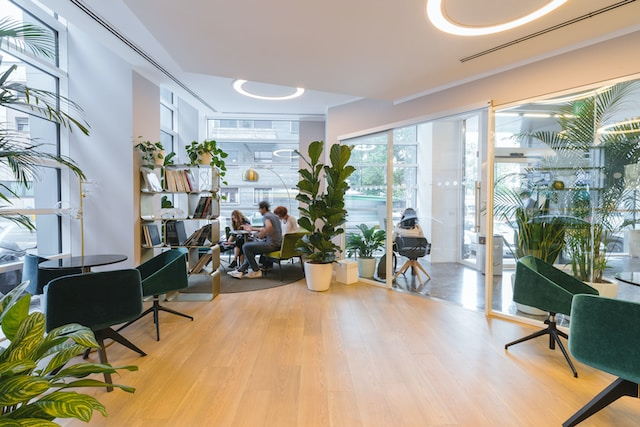

Das sind Wir!
Freyo
CEO
Natasha
CTO
Nate
CFO
Philip
Unser Farmer
Unser Betrieb
Unser Büro liegt in Zürich an der schönen Limmat. Und wir würden uns über einen Besuch sehr freuen.
Die Visionen von ka-root
Ka-Root ist eine Bewegung, die sich dafür einsetzt, die Lebensmittelverschwendung zu reduzieren, indem sie Bauern dabei hilft, ihre überschüssigen Lebensmittel an Kunden zu verkaufen, anstatt sie wegzuwerfen.
Nachhaltigkeit
Ka-Root ist der Überzeugung, dass jeder von uns Verantwortung für den Schutz unseres Planeten und der Ressourcen übernehmen sollte. Durch die Reduzierung der Lebensmittelverschwendung und den Einsatz von wiederverwendbaren Verpackungen leisten sie einen Beitrag zum Umweltschutz.
Gemeinschaft
Die Bewegung möchte eine Gemeinschaft aufbauen, die sich für eine gemeinsame Sache einsetzt - die Reduzierung der Lebensmittelverschwendung. Sie bringen Verbraucher, Geschäfte und Organisationen zusammen, um gemeinsam eine nachhaltigere Zukunft zu gestalten.
Wertschätzung
Ka-Root schätzt Lebensmittel und die Arbeit derjenigen, die sie produzieren. Sie wollen zeigen, dass Lebensmittelverschwendung nicht nur ein Problem für die Umwelt ist, sondern auch für diejenigen, die sie produzieren und verkaufen.